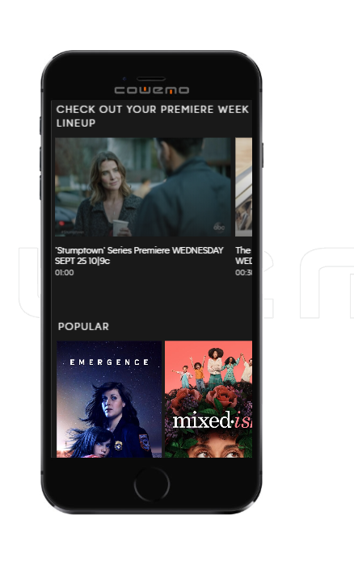

Hello world
This is what I think about the following website and elements of design!
Alignment
Walt Disney is one of my favorite all time brands and company's because of the varioius design elements. One of which is Alignment I believe they master this one well with the literal definition of alignment meaning straightforward.
Disney family fun

The reason I believe Disney.com to have alignment is it is in a straight forward format with the colors and the design; this makes it a perfect fit for alignment.
Repetition
Nike.Com shows is a wonderful sporting goodies store, I love their bold statments with their repeating of colors. and name brands, and the fact the sysmbol it's self repeat the stroke to make the check mark.
Nike sports gear.

They repeated the coloring coding of the colors white and black through their store for their background.
Contrast
ABC Channel 13 T.V. Shows
T.V. channel for Adults and Children
The reason I find this site to be contrast is their are competely different show on the page and styles.They also uses competely different colors and different patterns. The definition of contrast is different and when it comes to abc channel they are defiantly known for being different.